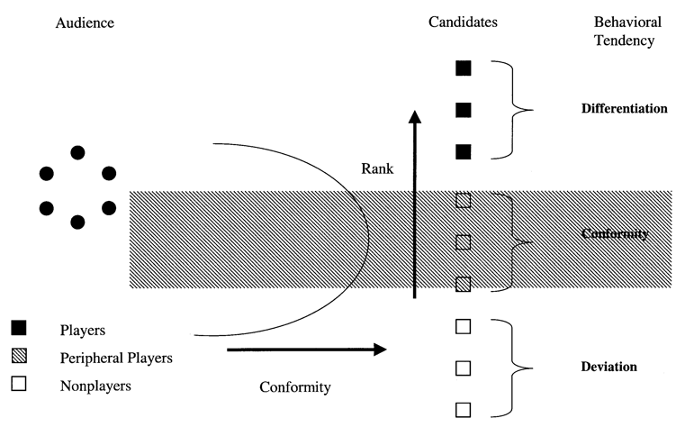
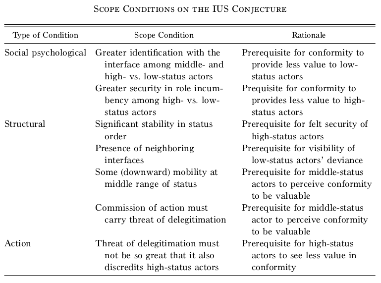

Middle-Status Conformity¶
Introduction¶
article’s objective, to argue that:
- conformity is high at the middle and low end of a social order
idea: conformity is high in the middle yet low at the top and bottom of status hierarchy
produces an inverted U shaped (IUS) relationship between status and conformity
conformity increases as actors value their membership in a group yet feel insecure in that membership
since high-status actors feel confident in their social acceptance, they are emboldened to deviate from the conventional behavior
low-status actors feel free to defy accepted practice because they are excluded regardless of their actions
- think high school outcasts
middle status conservatism reflects the anxiety experience by one who aspires to a social station but fears disenfranchisement
idea never gained wide acceptance
studies of diffusion of innovation devoted most attention to idea
- tests generated contradictory and unresolved findings
medial diffusion researchers favored elaboration of IUS: “high status actors are more likely to adopt innovations that mesh with prevailing group norms, while low status actors originate counternormative innovations”
agricultural diffusion scholars discarded IUS when they found groups of low socioeconomic status (SES) lag in adopting innovations
social psychologies were prominent early contributors to idea, but shifted focus
empirical testing of IUS relationship couldn’t find anything conclusive
in criminological literature, comments and findings were consistent with idea, but never attracted interest
- white-collar crime: makes distinction between normative and counternormative innovation found in medical diffusion literature
failure of IUS conjecture
theoretical difficulties
- assumption of three social ranks (high, middle, low) is arbitrary
- failed to delineate clear scope conditions and define key concepts
empirical difficulties
challenging to disentangle the effects of status from other stratifying variables
e.g. middle ranked actors appearing to act more conventionally simply because such actors perform at an average level due to the extent that status correlates with quality or ability, or due to the extent which the behavior in question is regarded as an indicator of performance
e.g. if: the action in question requires possession of certain resources
-> higher status actors are more resourceful -> lowest rank fails to conform -> low status actors not conforming misconstrued as them lacking social pressure, when really they never had the ability to conform in the first place
e.g. social rank can be attributed to differences in information access
- high- and low- ranked actors have more extragroup ties than middle-, so they have greater exposure to alternative practices and are more likely to adopt them
overview of article’s theoretical framework
suppose there is a social boundary
an actor may relate to that boundry in that they are:
on the inside,
on the outside,
or on the dividing line
- actors here work feverishly to solidfy their social standing by demonstrating their conformity with accepted practice
key feature of theory
scope conditions on:
- actors social-psychological orientation
- nature of status heirarchy
- type of actions involved
defines a narrow range of contexts in which it is apporpraite to expect an curvilinear relationship between status and conformity
2nd objective of article
analyze two settings that fall within range, and actions that pertain to that setting
- Silicon Valley legal market, opening a family law practice
- market for investment advice, issuing a “sell” recommendation
settings allow for examination of the effect of social rank indepdnet of other stratifiying variables
economic markets are relatively simple social settings that are more likely to satisfy the scope conditions
analysis suggests that the market constitutes a good setting for exploring traditional sociological thinking of status and role dynamics
objectives:
- reestablish the IUS conjecture w/ scope conditions and guidelines for empirical application
- demonstrate presence in two markets that fall within range
Theoretical Framework¶
candidates: seek intry into relation with audience
- candidates compete with one another
audience: are presented offers by the candidates, from they select their preference
- audience members compare competiting offers to make their choice
two stages of selection process
Conformity: field is set, illigitmate offers are eliminated
- offers are screened out if they hinder the audience’s ability to calibrate an offer against others
- such offers are impure/illigetimate in that they threaten the existing system of classification
- the interface collapses if offers are so different from one another as to make cross-offer comparison impossible
- audience limits its consideration to a discrete set of criteria, rather than optimizing over the full menu of criteria
Differentiation audience members compare candidates’ offers with one another and select the best
- candidates labour to distinguish their offers from one another to gain selection by audience members
- conformity on common standards and shared understandings enables individual differentiation to occur
Generating the IUS Curve¶
assumption: a candidate’s present location along the candidate-audience interface depends on her actions and her prior location
- supporting observation: entry barriers priviledge the early mover and hinder the latecomer’s efforts at estbalishing a presence
- candidate locations are stable from one period to the next
assumption: the audience’s classification of candidates entails a ranking of actors
- if audience members rate candidates by appeal, the resulting hierarchy indicates a candidate’s position along the interface
Status and conformity in the candidate-audience interface
- non-players, didn’t get past conformity, effectively screened out of consideration
- peripheral players, only got past conformity
- players, got past differentiation, secure in identity as players
- the edge of the interface is relatively porous - more anxiety for middle-status candidates, prospect of classification as a full-fledged player and the threat of deligitimation both loom large
to the extent that a candidate’s identity is fixed, her actions cannot alter that identity
consider an action an audience uses to ascertain who is a player
any candidate who wishes to gain recognition as a player will feel pressure to conform to audience expections concerning such an action
an actor’s status may override her actions as a basis for establishing her identity
if a low-status candidate is eliminated from consideration regardless of her behavior, she gains nothing from conforming
if the recognition of a high-status candidate is beyond doubt, there is no reason for him to conform
- an action that ordinarily constitutes evidence that one is illegitimate will be disregarded when taken by someone who’s legitimacy – or illegitimacy – is unquestioned
- if any benefit may be derived from undertaking the action, high- and low-status actors should be more likely to do so as neither of them has anything to lose
- this act of nonconformity may serve as a basis for differentiation for the high-status player or provide some other type of benefit to either (high- or low-status) candidate
- both are free from the pressure to conform
- this is what allows for the IUS curve between status and conformity
three classes of IUS curve are not chosen arbitrarily
only three possible locations an actor can reside w.r.t. a boundary
- straddle on the boundary,
- in the boundary,
- out of the boundary
two kinds of nonconformity for top and bottom of hierarchy
high-status nonconformity is of a limited sort since they derive great benefit from their recognition as players in the interface
- may attach a disclaimer to deviance so thaty their deparature fro convention signals to the audience not to interpret it as a sign that they are no longer players
low-status actors are indifferent or hostile to the prevailing practice as outsiders to the interface
- more open to altering the rules of the game
- less interested in change that reinforces the status quo ante
- are less inclined to use a disclaimer
middle-status actors should feel less secure that a disclaimer will help their departure from conformity will not be interpreted as a sign that they are no longer (eligable to be seen as) players
Theoretical Classification and Scope Conditions¶
Theoretical Classification¶
theoretical framework for predicitng IUS does not speak to possible relationships between conformity and other stratifying variables
the extent that other stratifying variables relate to conformity must reflect an association with status or be due to something(s) other than that which are responsible for the differential tendency to demonstrate membership in a desireable social designation (IUS)
status tends to be strongly associated with class and power
useful to disregard social status, or the amount of honor or esteem accorded to a person or social designation, as distnct from class and power
analyses that use class to predict behavior have no clear implications for the relationship between status and conformity
the basis for the IUS curve does not lie in intrinsic attributes, which tend to be opaque
- they lie in social psychological dispositions characteristic of particular structural positions (which are visible and stable)
empirical examination ofthe IUS curve control for relevant stratifying variables either through the research design or through the use of statistical controls
Scope Conditions¶

single interface that commands a strong degree of identifcation, particularly among middle- and upper-status actors
actors often participate in a wide variety of role relationships, each produces a distinct expecation that may conflict with others
- issue of multiple role commitments is less problematic in a market setting because market participants are typically fully committed to competing in the market in question
- in certain cases it may be doubtful whether an actor seeks higher status, but this assumption is unproblematic to applied to sellers, as higher status -> greater profits
The Scope Conditions¶
assumption#1: the status structure in question is sufficiently stable such that it confers security on high-status players and frees them to deviate
- a feature of many social settings
assumption#2: the lowest status actors are relatively permanent outsiders, such that they cease to identify with the interface
more likely to be met in a setting that contains interfaces that neighbor on the focal one
essentially: if i can’t get into one group, i’ll try another, if another exists. if it doesn’t, I’m forced to do my best to conform at a greater level
unless alternative audiences are available, low-status outsiders have little choice but to redouble their efforts to signal membership through greater conformity
while failure to gain recognition in the eyes of an audience should cause a candidate to withdraw and seek other audiences, this deviance will not be visible unless the other interface is sufficiently proximate to the focal one
unless the lowest ranked candidates are observable outsiders, a simple negative relationship between status and conformity should be observed
- observable outsider, are ignored by the audience but visible scholars because of their participation in a neighboring interface
finding neighboring interfaces may be quite difficult but is easiest in markets that comprise a set of tiered market segments, especially when such tiers are ordered by status
- e.g. in case of legal services and investment banking industries, the members of the lower status tier are generally observable outsiders to the upper tier
scope conditions on the social-psychological orientation of the actors depend on certain features of the status structure
- that it should be relatively stable and contain neighboring segments
- such conditions are liekly to be met in economic markets
- the status structure cannot be so stable that there is no mobility, especially in the downward direction
pressure for conformity pertains to an action that the audience generally uses to ascertain who is a player
there must be a significant threat that the benefits of undertaking the action will be outweight by its copacity to signal that the actor is illegitimate
must not be that the action is so discrediting that it will tarnish even a secure, high-status player
has issues
- how might one know a priori that an action meets these criteria
- how are we to regard actions that have multiple, possibly conflicting, meanings in the eyes of relevant audience members